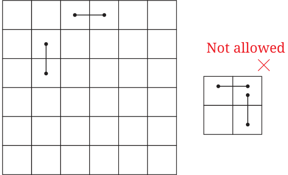

Draw a 6 by 6 grid. Two players take turns covering two adjacent squares by drawing a line. The line can be placed either way: horizontally or vertically. The lines cannot overlap. The game goes on till a player is not able to place any more lines. The player who is not able to place a line loses. With what strategy can one play to win this game?

When a figure is made up of parts that repeat in a definite pattern, we say that the figure has symmetry. We say that such a figure is symmetrical. A line that cuts a plane figure into two parts that exactly overlap when folded along that line is called a line of symmetry or axis of symmetry of the figure. A figure may have multiple lines of symmetry. Sometimes a figure looks exactly the same when it is rotated by an angle about a fixed point. Such an angle is called an angle of symmetry of the figure. A figure that has an angle of symmetry strictly between 0 and 360 degrees is said to have rotational symmetry. The point of the figure about which the rotation occurs is called the centre of rotation. A figure may have multiple angles of symmetry. Some figures may have a line of symmetry but no angle of symmetry, while others may have angles of symmetry but no lines of symmetry. Some figures may have both lines of symmetry as well as angles of symmetry.